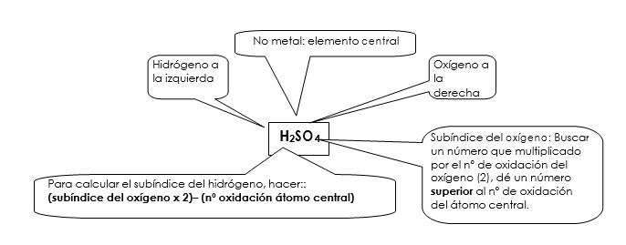

Son sustancias ácidas que tienen de fórmula general HaXbOc siendo a, b, c números enteros. X es generalmente un no metal, aunque en algunos casos puede ser un metal de transición: Cr, Mn, V, Mo, W. Contienen O -de ahí su nombre- (n.o. = -2) en la molécula y presentan propiedades ácidas.
FORMULACIÓN
Generalmente, se suele formular uniendo todos los hidrógenos siendo la fórmula obtenida la siguiente:
HaXbOc
donde el H actúa con número de oxidación (1), X, el no metal con su número de oxidación positivo, n, y el oxígeno actúa con número de oxidación negativo (-2). El compuesto es neutro, por lo que el número de cargas positivas debe ser igual al de negativas:
a + b · n= 2 · c

Observa que, cuando el no metal tiene número de oxidación par, hay dos hidrógenos, y solo uno cuando lo tiene impar. La fórmula depende únicamente del número de oxidación del no metal, por lo que es posible agrupar las estructuras del no metal según su número de oxidación:
|
NÚMERO OXIDACIÓN |
FÓRMULA GENERAL |
NÚMERO OXIDACIÓN |
FÓRMULA GENERAL |
|
I |
HXO |
II |
HXO2 |
|
III |
HXO2 |
IV |
HXO3 |
|
V |
HXO3 |
VI |
HXO4 |
|
VII |
HXO4 |
|
|
Otra forma de obtener la fórmula de los oxoácidos es añadiendo sobre el óxido no metálico una molécula de agua, simplificando cuando se pueda.
|
SO3 |
+ |
H2O |
-> |
H2SO4 |
|
|
|
Óxido de azufre(VI) |
|
agua |
|
Ácido sulfúrico |
|
|
|
|
|
|
|
|
|
|
|
O5Cl2 |
+ |
H20 |
-> |
H2Cl2O6 |
-> |
HClO3 |
|
Cloruro de oxígeno(V) |
|
agua |
|
|
|
Ácido clórico |
NOMENCLATURA
NOMENCLATURA TRADICIONAL
ácido + prefijo + nombre del elemento X + sufijo.
El elemento X puede actuar con diferentes n.o. y por ello se utilizan prefijos y sufijos:
hipo....oso ....oso ....ico per....ico
- H2CO3: ácido carbónico H2SO3: ácido sulfuroso H2SO4: ácido sulfúrico
CASOS ESPECIALES
UTILIZACIÓN DE LOS PREFIJOS ORTO-, DI- O PIRO- Y META-:
Ácidos orto-. Se añaden dos moléculas de H20 a los ácidos de los grupos 16 y 17 y una molécula de H20 a los ácidos de los grupos 13, 14 y 15. Para nombrarlos en nomenclatura tradicional se pone el prefijo orto delante del nombre del ácido de procedencia; salvo para el P, As, Sb, Si y B que forman los ácidos más estables y se les nombra sin el prefijo.
- H3PO4: ácido fosfórico H3BO3: ácido bórico H5IO6: ácido ortoperyódico
- H3AsO3: ácido arsenioso H4SiO4: ácido silícico H6Te06: ácido ortotelúrico
Ácidos di- o piro-. Estos ácidos se forman por la unión de dos moléculas de ácido más estable, mediante una reacción de condensación, con la salida de una molécula de agua y la formación de un puente de oxígeno. En la nomenclatura tradicional solo hay que poner el prefijo di- (el prefijo piro- está en desuso) delante del ácido del que procede.
- 2 H3PO4 à H4P2O7 + H2O El ácido pirofosfórico o difosfórico.
- El ácido crómico puede por tanto dimerizarse y sufrir la pérdida de una molécula de agua dando lugar al ácido dicrómico: 2 H2CrO4 à H4Cr2O8 - H2O à H2Cr2O7
Ácidos meta-. Cuando solo se añade una molécula de agua al óxido, se coloca el prefijo meta-, para así distinguirlos de los ácidos orto-, que no llevan este prefijo por ser los más estables, como ocurre con el fósforo,arsénico, antimonio, silicio y boro.
Hagamos un resumen usando el P como referencia (valencias +3 y +5) y que podemos aplicar de igual manera a As, Sb, B y Si:
1º ÁCIDOS META-: este caso es el que ya sabemos, es decir, al óxido del no metal (anhídrido) le sumamos una molécula de H2O, solo que a la hora de nombrarlo usamos el prefijo META- para distinguirlo de las otras 2 combinaciones:
- P2O3 + H2O = H2P2O4 = HPO2 (ácido metafosforoso)
- P2O5 + H2O = H2P2O6 = HPO3 (ácido metafosfórico)
2º ÁCIDOS ORTO-: Partiendo del ácido meta, le sumamos un nueva molécula de H2O:
- (ácido metafosforoso) HPO2 + H2O = H3PO3 ácido (orto)fosforoso
- (ácido metafosfórico) HPO3 + H2O = H3PO4 ácido (orto)fosfórico
Recuerda que hemos puesto el prefijo ORTO- entre paréntesis porque para P, As, Sb, Si y B se puede poner el prefijo o no, son una excepción, de hecho normalmente no se pone.
3º ÁCIDOS DI- o PIRO-: Empezamos diciendo que actualmente se utiliza el prefijo DI-. Son el resultado de sumar 2 moléculas del ácido más estable (que para el P, As, Sb, Si y B el ácido más estable es el ORTO-), y al resultado (sin simplificar) le restamos 1 molécula de H2O.
- H3PO3 + H3PO3 = H6P2O6 - H2O = H4P2O5 ácido difosforoso
- H3PO4 + H3PO4 = H6P2O8 - H2O = H4P2O7 ácido difosfórico
La asignación del prefijo META– se asigna al oxoácido simple. Y el prefijo ORTO-, en los grupos 13,14,15, al polihidratado (molécula de ácido + H2O)
Para los elementos, B, Si, P, As, Sb , se suelen poner los prefijos . En el resto se suele omitir o solo se considera el ORTO- a efectos de nombrar la fórmula.
- HBO2: Ácido metabórico.
- H3BO3: Ácido ortobórico ó simplemente Ácido bórico. H2SiO3: Ácido metasilícico
- H4SiO4: Ácido ortosilícico ó simplemente Ácido silícico. HPO3: Ácido metafosfórico.
- H3PO4: Ácido ortofosfórico ó simplemente Ácido fosfórico. (HPO3 + H2O)
|
|
TRADICIONAL |
|
TRADICIONAL(excepción) |
|
TRADICIONAL |
|
HClO |
Ácido hipocloroso |
HPO3 |
Ácido metafosfórico |
H4P2O7 |
Ácido difosfórico |
|
HClO2 |
Ácido cloroso |
H3PO4 |
Ácido fosfórico |
H2S2O5 |
Ácido disulfuroso |
|
HClO3 |
Ácido clórico |
HPO2 |
Ácido metafosforoso |
H2S2O7 |
Ácido disulfúrico |
|
HClO4 |
Ácido perclórico |
H3PO3 |
Ácido fosforoso |
H2C2O5 |
Ácido dicarbónico |
|
H2SO3 |
Ácido sulfuroso |
HAsO3 |
Ácido metarsénico |
H2Cr2O7 |
Ácido dicrómico |
|
H2SO4 |
Ácido sulfúrico |
H3AsO4 |
Ácido arsénico |
|
|
|
HNO2 |
Ácido nitroso |
HAsO2 |
Ácido metarsenioso |
|
|
|
HNO3 |
Ácido nitrico |
H3AsO3 |
Ácido arsenioso |
|
|
|
H2CO3 |
Ácido carbónico |
H2SiO3 |
Ácido metasilícico |
|
|
|
H2MnO4 |
Ácido mangánico |
H4SiO4 |
Ácido ortosilícico |
|
|
|
HMnO4 |
Ácido permangánico |
HBO2 |
Ácido metabórico |
|
|
|
H2CrO4 |
Ácido crómico |
|
|
|
|